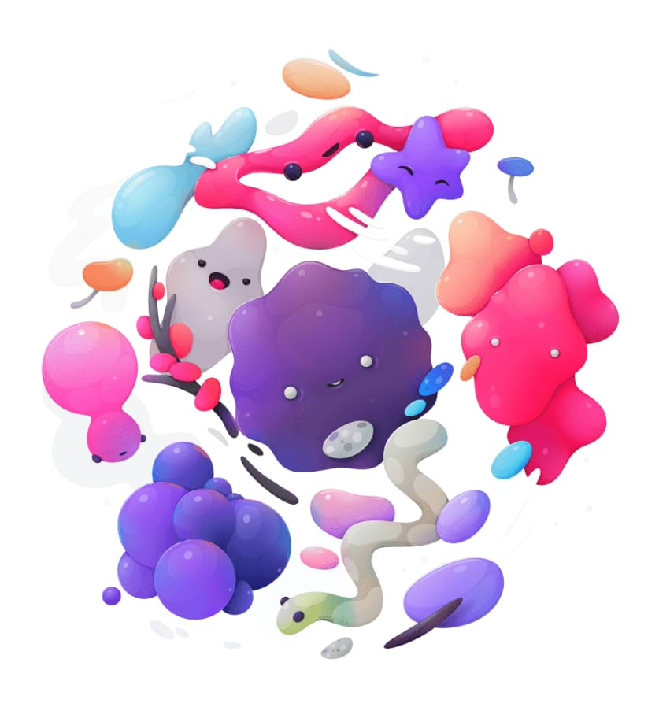

Selective Color adjustment
The Selective Color adjustment provides a way to subtly adjust and enhance colors in your image on an individual channel basis. It makes a useful tool for color balance corrections.


The Selective Color adjustment provides a way to subtly adjust and enhance colors in your image on an individual channel basis. It makes a useful tool for color balance corrections.
The following settings can be adjusted in the dialog: